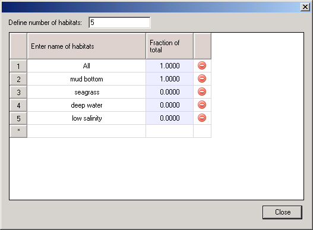
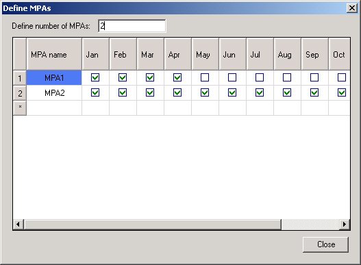
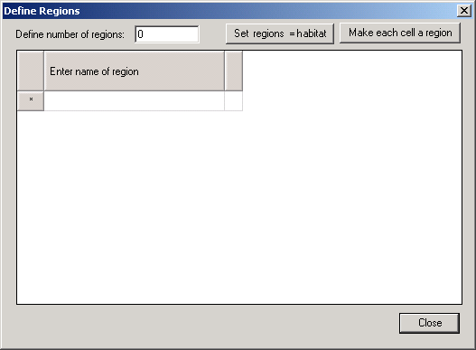

‘Habitats’, in Ecospace, are sets of (water) cells sharing certain features affecting the movements, feeding rate, and survival of the Ecopath model components occurring therein. Any number of user defined habitats can be used in Ecospace.
Typically, the features defining habitats are distance from the coast (inshore, offshore…), or depth (shallow, intermediate, deep…) and/or bottom type (rocky, sandy, muddy…). Habitats are thus as easy to define as it is to obtain rough bathymetric maps or maps indicating bottom types.
Ideally, the habitats defined in Ecospace should correspond to ‘sub-web’, i.e., to a set of primary producers, herbivorous and other consumers occurring only over that habitat. Such sub-webs, defined through the diet composition matrix of an Ecopath file may be linked, through higher trophic levels groups, with other sub-webs in the same system, as also occurs in nature. Herein, the higher trophic level groups, through their ability to feed in different habitats, integrate the different subsystem into a whole.
Assuming that such sub-webs are implicit in the Ecopath file underlying an Ecospace analysis, all that is needed is to give short descriptive names to the habitat types in question, using the Edit habitats dialogue box (see below).
Habitats can be set as marine protected areas (MPAs) for all or part of the year, using the Edit MPAs dialogue box (see below). Users can also define regions, using the Edit Regions dialogue box (see below).
Before creating an Ecospace basemap (see Basemap) you must set the dimensions of the map, using the Edit basemap dialogue box (Figure 10.XX). The Edit basemap dialogue box is accessible from the Ecospace Basemap form (click on the symbol ) or directly from the Ecospace menu.
Set the dimensions of the map using Number of rows and Number of cols. Set the length of each (square) cell using Cell length. You can set the physical location of the map using Top-left latitude and Top-left longitude.
The cells are square units, but the maps not need be so, both square and rectangular maps can be accommodated. Rectangular maps should not be defined too ‘thin’, (i.e., their aspect ratio (AR = height/width) is recommended to remain in the range 5 £ AR £ 0.2).
The number of cells in the basemap may range from 4 (for a square 2x2 map, used e.g. for verification or demonstration purposes) to 10,000, (e.g., for a square 100 x 100 map). We recommend, unless otherwise required, the intermediate 20 x 20 map provided as default, which represents a compromise between showing details and maintaining a high computing speed.
Though not contributing to the results, the basemap cells defined as ‘land’ consume memory and computing time. Thus, their number should be kept as small as possible, e.g. by orienting the basemap sideways where appropriate.
Habitats are defined using Edit habitats dialogue box (Figure 10.3), accessible from the Ecospace Basemap form (click on the symbol ) or directly from the Ecospace menu.
Any number of user defined habitats can be used in Ecospace. Add habitats using the Add button then type names for the habitats in the Habitat cell. Habitats can be deleted using the Remove button.
Assign the habitats to the base map using the Basemap form.

Figure 10.3
Users can overlay habitats with designated marine protected areas (MPAs).
MPAs are defined using Edit MPAs dialogue box (Figure 10.4), accesible from the Ecospace Basemap form (click on the symbol ) or directly from the Ecospace menu.
Add MPAs using the Add button. MPAs will automatically be named MPA1, MPA2 etc. They can be renamed by typing directly in the MPA cell. MPAs can be deleted using the Remove button.
You can simulate seasonal MPAs by setting the months of the year that the MPA is operational in the check boxes provided. Use the Ecospace fishery form to assign which fleets can and cannot fish in the MPA.
Assign the MPAs to the base map using the Basemap form.

Figure 10.4
Users can also overlay habitats with statistical ‘regions’ (i.e., groups of cells). Regions represent areas of management interest and may or may not have biological significance. Organisms cannot be assigned to regions, only habitats.
Regions are defined using Edit regions dialogue box (Figure 10.5), accessible from the Ecospace Basemap form (click on the symbol ) or directly from the Ecospace menu.
Add regions using the Add button. Regions will automatically be named Region 1, Region 2 etc. They can be renamed by typing directly in the Reg.Hab cell. Regions can be deleted using the Remove button.
Assign the regions to the base map using the Basemap form.
To set each habitat as a region, click the Habitat = regions button on the Edit regions dialogue box. In this case, the regions will automatically be updated on the basemap to be the same as the habitats. Note, you must assign habitats on the basemap before setting each habitat as a region. To set each cell as a region, click the Make each cell a region button. Again, regions will automatically be updated on the basemap.
